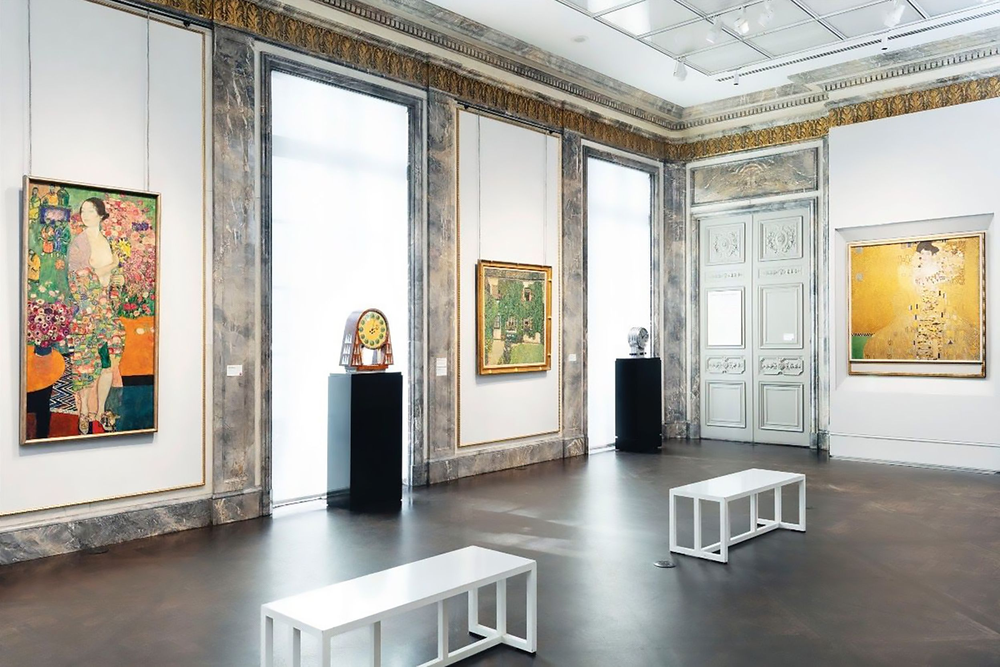
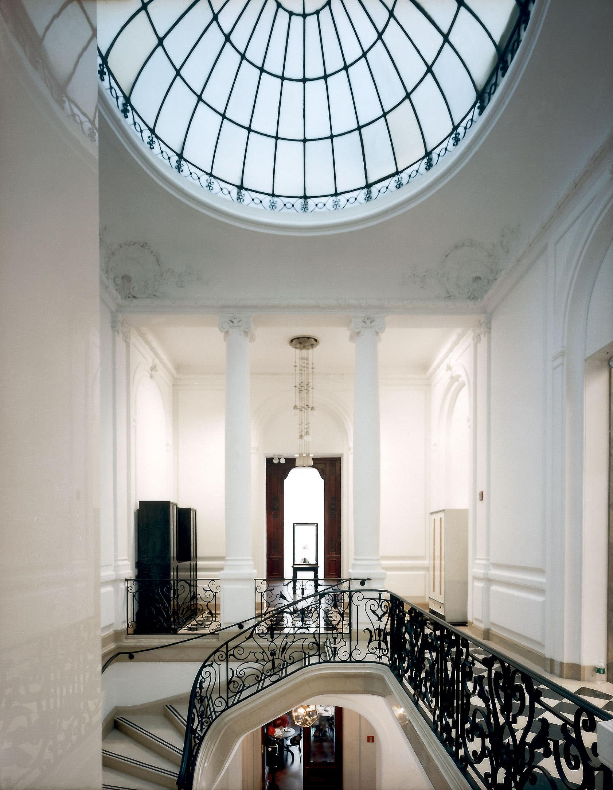

An elegant museum on Fifth Avenue showcasing stunning Austrian and German modernist art, including Klimt’s iconic masterpieces.
The Neue Galerie is a jewel-box museum on Manhattan’s Upper East Side devoted to early 20th-century German and Austrian art and design. Located in a beautifully restored Beaux-Arts mansion on Fifth Avenue, it immerses visitors in the creative worlds of Gustav Klimt, Egon Schiele, Oskar Kokoschka, and the designers of the Wiener Werkstätte. Its galleries bring together fine art, decorative objects, photography, and furniture, offering a vivid portrait of Viennese and German modernism at a moment when artists were reinventing beauty, identity, and form. The museum’s intimate scale and elegant interiors make it feel more like stepping into a refined European townhouse than a typical New York institution.
The history of the Neue Galerie begins with the shared passion of art dealer Serge Sabarsky and collector Ronald S. Lauder, both devoted to bringing German and Austrian modernism to a wider American audience. After Sabarsky’s death, Lauder pursued their vision alone, purchasing and restoring the 1914 William Starr Miller House, a grand mansion that set the perfect tone for their planned museum. When the Neue Galerie opened in 2001, it quickly drew international attention, especially after Lauder acquired Klimt’s Portrait of Adele Bloch-Bauer I, a masterpiece reclaimed from Nazi looting. The collection has continued to grow, and today the museum stands as one of the most important centers for early modern Central European art outside of Europe.
The appeal of the Neue Galerie lies in its focused, atmospheric experience. Rather than overwhelming visitors with sprawling galleries and eras that stretch across centuries, it offers a carefully curated look at a single cultural world—one filled with gold-leaf shimmer, raw expressionist linework, and exquisitely crafted design. The museum’s immersive environment enhances this effect: richly colored walls, soft lighting, and thoughtful placements make each work feel like part of a cohesive story. Even the on-site Café Sabarsky adds to the charm, offering Viennese pastries and coffee in a setting that feels like a time capsule from old Vienna. For anyone who values mood, detail, and artistic craftsmanship, the Neue delivers an experience that is both intimate and unforgettable.
The Neue Galerie is significant to New York City because it expands the city’s cultural landscape with a rich, focused lens on German and Austrian modernism—an era and region often underrepresented in American museums. By housing masterpieces like Adele Bloch-Bauer I, the museum has become a symbol of artistic brilliance, historical restitution, and cultural memory. It strengthens Museum Mile by offering a refined counterpoint to larger institutions, proving that intimate museums can have just as much impact as massive ones. Through its scholarship, exhibitions, and preservation of a pivotal artistic moment, the Neue Galerie deepens New York’s reputation as an international arts capital and keeps alive the stories of artists whose work shaped the early modern world.

Someone should go to the Neue Galerie because it provides a rare opportunity to engage deeply with some of the most influential works of early modernism in a setting that feels personal and thoughtfully shaped. You’re not just seeing Klimt’s iconic golden portraits or Schiele’s electric drawings—you’re experiencing them in a space that mirrors the culture, elegance, and intellectual curiosity that produced them. It’s a perfect destination for visitors who want a museum visit that’s meaningful but manageable, atmospheric but still deeply educational. Whether you’re a fan of modernism, decorative arts, or European history, the Neue invites you into a world of beauty and transformation.
